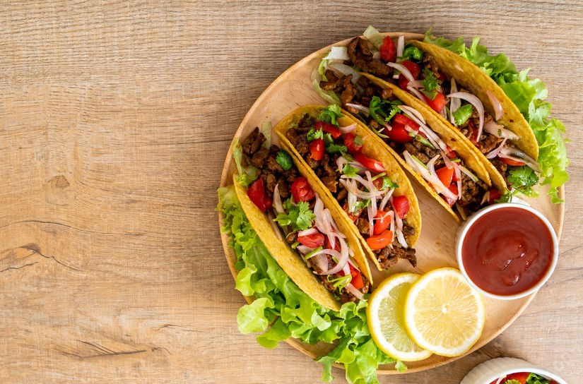
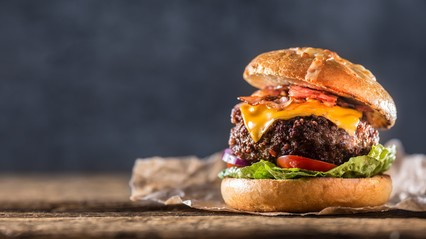

Making Biryani For The First Time:
Making biryani for the first time can be a challenge, with its layers of marinated meat and fragrant spices. The process might be tough, but the rich, complex flavors that emerge are incredibly rewarding. Each bite of your homemade biryani makes the effort worth it, turning a difficult cooking experience into a delicious triumph.

Favourite Late Breakfast Recipe:
When the midnight munchies strike, tacos are the perfect late-night snack. Their versatility allows you to whip up a satisfying bite with whatever you have on hand, whether it’s a classic beef taco or a creative breakfast version with eggs and bacon. With their crisp shells and flavor-packed fillings, tacos offer a quick, delicious solution to your cravings, proving that they’re not just for daytime dining.

Wanting A Big Bad Burger:
When you’re really hungry and need a meal that hits the spot, a beef burger is hard to beat. Its juicy patty, hearty toppings, and satisfying bun create a perfect combination of flavors and textures that can tackle even the deepest hunger. Whether you prefer it with classic lettuce and tomato or loaded with extras like cheese, a well-made beef burger offers a delicious and fulfilling solution to your appetite.

Trying Creamy Pasta Recipe For The First Time:
Trying creamy steak pasta for the first time is a delightful culinary adventure. This dish combines tender, juicy steak with a rich, creamy sauce and perfectly cooked pasta, creating a satisfying and indulgent meal. The steak adds a hearty, savory element, while the creamy sauce envelops the pasta in a luscious, comforting embrace. Creamy steak pasta is a delicious fusion that’s sure to impress your taste buds.

When It's a Movie Night:
Movie night and pizza are a match made in comfort food heaven. The warmth of a cheesy, melty pizza pairs perfectly with a cozy movie marathon, making it the ultimate choice for a relaxed evening. Whether you opt for a classic pepperoni, a veggie-loaded slice, or something like barbecue chicken, pizza's delicious combination of crispy crust, savory toppings, and gooey cheese adds an extra layer of enjoyment to your film-watching experience.

Having A Party Or Friends Coming Over:
Lasagna is the perfect dish when friends come over, offering a hearty and comforting meal that’s sure to please a crowd. Its layers of rich meat sauce, creamy béchamel, and gooey cheese create a savory, satisfying feast that’s easy to serve and even easier to enjoy. Whether you make it with classic beef or a veggie twist, lasagna’s indulgent flavors and satisfying texture make it an ideal choice for a casual get-together, ensuring your friends leave with full bellies and happy hearts.